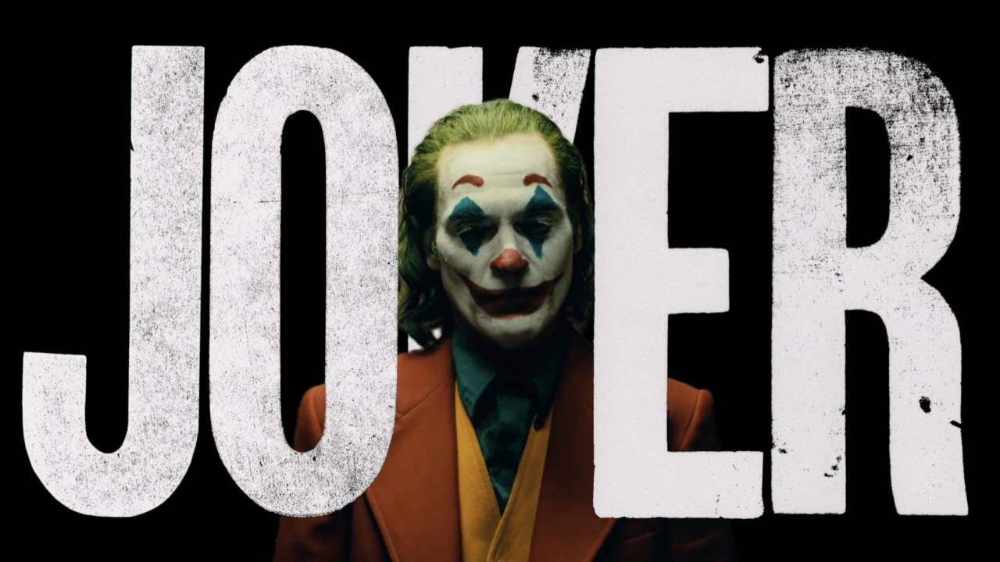
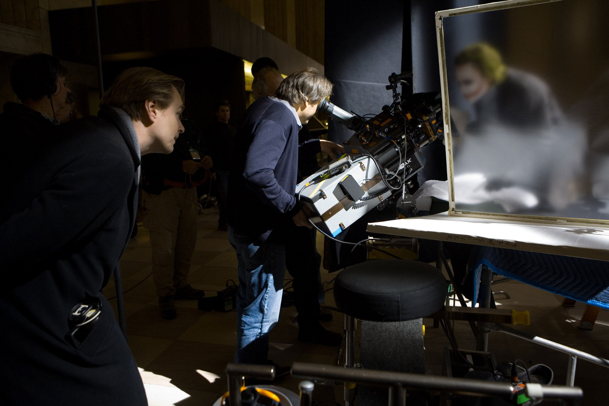

The Joker: The Movie
In theathers October 4th
About the movie
In 1981, a failed stand-up comedian turns to a life of crime and chaos in Gotham City, slowly rising to become a frightening legend.
A Joker's Life
The Joker is a supervillain created by Bill Finger, Bob Kane, and Jerry Robinson who first appeared in the debut issue of the comic book Batman (April 25, 1940), published by DC Comics. Credit for the Joker's creation is disputed; Kane and Robinson claimed responsibility for the Joker's design while acknowledging Finger's writing contribution. Although the Joker was planned to be killed off during his initial appearance, he was spared by editorial intervention, allowing the character to endure as the archenemy of the superhero Batman.
In his comic book appearances, the Joker is portrayed as a criminal mastermind. Introduced as a psychopath with a warped, sadistic sense of humor, the character became a goofy prankster in the late 1950s in response to regulation by the Comics Code Authority, before returning to his darker roots during the early 1970s. As Batman's nemesis, the Joker has been part of the superhero's defining stories, including the murder of Jason Todd—the second Robin and Batman's ward—and the paralysis of one of Batman's allies, Barbara Gordon. The Joker has had various possible origin stories during his decades of appearances. The most common story involves him falling into a tank of chemical waste which bleaches his skin white and turns his hair green and lips bright red; the resulting disfigurement drives him insane. The antithesis of Batman in personality and appearance, the Joker is considered by critics to be his perfect adversary.
Starring
- Joaquin Phoenix as Arthur Fleck / Joker
- Robert De Niro as Murray Franklin
- Zazie Beetz as Sophie Dumond
- Frances Conroy as Penny Fleck: Arthur's mother
- Brett Cullen as Thomas Wayne
- Among many more.
Credits
- Directed by Todd Phillips
- Produced by Todd Phillips, Bradley Cooper and Emma Tillinger Koskoff
- Written by Todd Phillips and Scott Silver
- Based on Characters by DC Comics
- Music by Hildur Guðnadóttir
- Cinematography Lawrence Sher
- Edited by Jeff Groth
- Production companies: DC Films Village Roadshow Pictures Bron Creative and Joint Effort
- Distributed by Warner Bros. Pictures